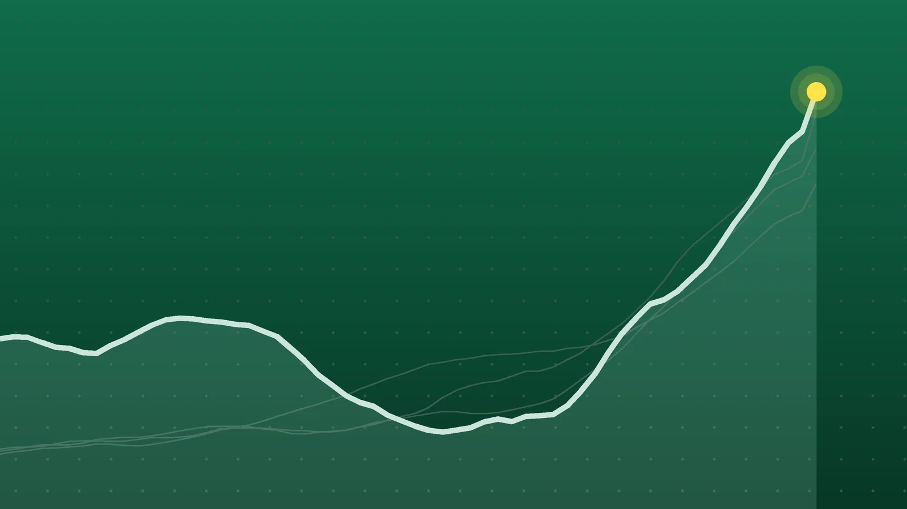

SportsExplainer
Sports Scores, Oct. 22: Other Results From NBA, NFL and Tennis
Shai Gilgeous-Alexander’s 141-game run of 20-point nights ended in a win, the 76ers came back from 29 down, and David Goffin’s farewell week finished in Brussels.

Quick take
- Philadelphia rallied from 29 points down to beat Cleveland 114-106, with Tyrese Maxey scoring 32 and Joel Embiid 24.
- Oklahoma City beat Denver 96-84, but Shai Gilgeous-Alexander’s NBA-record streak of 141 straight games with at least 20 points ended when he scored 17.
- Chicago beat New England 30-24 as Caleb Williams threw for 308 yards and Cairo Santos made a 58-yard field goal with 1:34 left.
- Qualifier Katarzyna Kawa upset Belinda Bencic in Ningbo, and Alex Michelsen beat David Goffin in the Belgian’s farewell tournament.
Why it's trending Thursday, Oct. 22, had two NBA games, one NFL game and five tour-level tennis events; the NHL, college football and cricket have their own roundups.
Other sports results for Oct. 22
Philadelphia’s home opener turned on a second-half comeback. The 76ers fell behind Cleveland by 29 points, then outscored the Cavaliers 69-37 over the last two quarters to win 114-106, according to the Philadelphia Inquirer. AP called it the biggest comeback win of LeBron James’ career; James had 17 points and 10 rebounds for Philadelphia.
In Oklahoma City, the Thunder beat Denver 96-84 on a night when Shai Gilgeous-Alexander’s NBA-record run of 141 straight games with 20 or more points came to an end. He finished with 17 on 6-of-19 shooting, Bleacher Report and the Denver Gazette reported.
This roundup collects every Thursday result in our tracked leagues that didn’t have three or more games of its own. The NHL, college football and cricket have their own roundups: NHL scores for Oct. 22, college football scores for Oct. 22 and cricket scores for Oct. 22.
NBA and NFL
| League | Winner | Score | Loser | Note |
|---|---|---|---|---|
| NBA | Philadelphia 76ers | 114-106 | Cleveland Cavaliers | Maxey 32, Embiid 24, Jaylen Brown 21; Donovan Mitchell 32 for Cleveland |
| NBA | Oklahoma City Thunder | 96-84 | Denver Nuggets | Jalen Williams 21; Aaron Gordon 20 for Denver |
| NFL | Chicago Bears | 30-24 | New England Patriots | Caleb Williams 308 yards, 2 TDs; Santos 58-yard field goal |
All three winners were the home teams.
WTA tennis
Ningbo Open (WTA 500), round of 16
| Winner | Score | Loser |
|---|---|---|
| Elena Rybakina (1) | 5-0, retired | Polina Kudermetova (Q) |
| Iva Jovic (4) | 6-4, 6-3 | Jasmine Paolini |
| Katarzyna Kawa (Q) | 7-5, 6-2 | Belinda Bencic (5) |
| Diana Shnaider (6) | 7-5, 6-4 | Alexandra Eala |
Japan Women’s Open, Osaka (WTA 250), round of 16
| Winner | Score | Loser |
|---|---|---|
| Ann Li (1) | 6-3, 6-1 | Zeynep Sonmez |
| Mary Stoiana (Q) | 6-2, 2-6, 6-3 | Moyuka Uchijima (WC) |
| Katerina Siniakova | 6-4, 6-1 | Magda Linette |
| Antonia Ruzic | 6-4, 0-0, retired | Kayla Day |
ATP tennis
Almaty Open (ATP 250), round of 16
| Winner | Score | Loser |
|---|---|---|
| Daniil Medvedev (1) | 6-2, 6-1 | Sho Shimabukuro |
| Karen Khachanov (5) | 6-2, 4-6, 7-6 (7) | Tomas Machac |
| Terence Atmane | 6-7 (4), 7-6 (2), 7-6 (5) | Mattia Bellucci |
| Alexander Bublik (3) | walkover | Fabian Marozsan |
European Open, Brussels (ATP 250), round of 16
| Winner | Score | Loser |
|---|---|---|
| Jiri Lehecka (2) | 6-4, 6-2 | Raphael Collignon |
| Alex Michelsen (5) | 6-3, 6-4 | David Goffin (WC) |
| Zizou Bergs (6) | 6-2, 6-4 | Damir Dzumhur |
Lyon Open (ATP 250), round of 16
| Winner | Score | Loser |
|---|---|---|
| Flavio Cobolli (1) | 6-2, 6-4 | Stan Wawrinka (WC) |
| Taylor Fritz | 6-2, 7-5 | Pierre-Hugues Herbert (Q) |
| Luca Van Assche | 2-6, 6-4, 6-4 | Valentin Vacherot (3) |
| Brandon Nakashima (5) | 6-4, 6-3 | Kyrian Jacquet (Q) |
| Daniel Altmaier | 6-3, 6-4 | Borna Gojo (Q) |
Seeds are in parentheses; Q is a qualifier and WC a wild card. Results and dates are from Tennis Tour Calendar’s daily results, checked against the ATP Tour’s results pages, the WTA’s draw sheets and tennis-db. No reason was given for Marozsan’s withdrawal.
76ers 114, Cavaliers 106: from 29 down
Cleveland led 69-45 at halftime behind 22 first-half points from Mitchell, and Philadelphia had 15 turnovers in the half, the Inquirer reported. An 11-0 run in the third quarter cut the gap to 84-82. In the fourth, Embiid scored seven straight points to give Philadelphia its first lead, 96-95, and Brown added six in a row. Every Philadelphia starter reached double figures, including VJ Edgecombe with 11, according to AP. The 76ers are 2-0 and the Cavaliers 0-1.
Thunder 96, Nuggets 84: the streak ends
Gilgeous-Alexander didn’t score in the first quarter and had 2 points at halftime, Bleacher Report noted. He made 2 of his first 13 shots. When Denver emptied its bench late, he chose not to stay on the floor to chase 20 points, according to OKC Thunder Wire. Chet Holmgren had 12 points, 17 rebounds and four blocks. For Denver, opening its season, Nikola Jokic was 5 of 19 for 13 points, and the Nuggets committed 22 turnovers.
Bears 30, Patriots 24: a 58-yard dagger
Two 4-2 teams met in Chicago, and the Bears led 20-14 at halftime after Luther Burden caught a 24-yard touchdown pass. Cairo Santos missed from 53 yards in the fourth quarter, then made a 58-yarder with 1:34 left, a career long that ties the franchise record, to put Chicago up two scores, AP reported. New England kicked a field goal with 37 seconds left, and Rome Odunze recovered the onside kick.
Williams went 22 of 33 with no interceptions in his second game back from a hamstring injury, and AP said he is the first Bears quarterback with back-to-back 300-yard passing games. Burden had four catches for 130 yards. Drake Maye threw for 321 yards and two touchdowns for New England, with one interception, according to CBS Sports.
Tennis: Kawa’s upset, Goffin’s goodbye
Kawa, a qualifier, beat fifth-seeded Bencic in 1 hour, 43 minutes, according to Tennis Majors, and next faces world No. 1 Rybakina, who advanced when Kudermetova retired at 5-0 in the first set. The WTA draw sheet lists a shoulder problem.
In Brussels, Michelsen ended Goffin’s run in his farewell tournament in 1 hour, 28 minutes. Goffin, a former world No. 7, had won his first tour-level match since Shanghai 2025 a day earlier, the ATP Tour reported. In Lyon, Van Assche came from a set down to beat third seed Vacherot, and top seed Cobolli beat Wawrinka in 68 minutes.
What it means
- NFL standings: Chicago moved to 5-2 and New England fell to 4-3, which ended the Patriots’ three-game winning streak.
- SGA’s streak in context: 141 games is about 1.7 full 82-game regular seasons of 20-point nights in a row. Oklahoma City is 2-0.
- Tennis seeds: Thursday’s matches knocked out two seeds, Bencic in Ningbo and Vacherot in Lyon. The top seeds at all five events, Rybakina, Li, Medvedev, Arthur Fils in Brussels and Cobolli, are still in the draw.
What’s next
- NBA, Friday, Oct. 23: a full slate, including the Knicks at the Celtics and the Pistons at the Heat. Philadelphia hosts Milwaukee on Saturday at 7:30 p.m. ET, and Denver opens at home against New Orleans on Saturday.
- NFL, Week 7: the Steelers and Saints play in Saint-Denis, France, on Sunday at 9:30 a.m. ET, and the Chiefs visit the Seahawks on Sunday night, according to NFL.com. The Cowboys visit the Eagles on Monday night.
- Tennis, Friday, Oct. 23: quarterfinals everywhere, including Medvedev vs. Atmane and Bublik vs. Khachanov in Almaty, Fils vs. Michelsen in Brussels, and Rybakina vs. Kawa in Ningbo.
- Formula 1: the U.S. Grand Prix weekend in Austin runs Oct. 23-25.
Sources
- Associated Press via ESPN James, Embiid, Maxey spark 76ers' rally from 29 points down in home opener to stun Cavs 114-106Oct. 22, 2026
- The Philadelphia Inquirer Sixers beat Cavaliers, 114-106, after trailing by 29 points in wild home openerOct. 22, 2026
- Bleacher Report SGA's Streak Ends as Thunder Beat Nuggets, Box Score Stats, Highlights for Jokic, Chet, Murray, MoreOct. 23, 2026
- OKC Thunder Wire via Yahoo Sports Player grades: SGA's 20-point streak ends in Thunder's 96-84 win over NuggetsOct. 23, 2026
- The Denver Gazette Nuggets at Thunder: 3 takeaways from Denver's season-opening lossOct. 22, 2026
- Associated Press via KIRO 7 Caleb Williams throws 2 TD passes as the Bears beat Drake Maye and the Patriots 30-24Oct. 22, 2026
- CBS Sports Caleb Williams outduels Drake Maye as Bears top Patriots 30-24Oct. 22, 2026
- Bleacher Report Bears Beat Patriots, Box Score Stats, Highlights for Caleb Williams, Maye, A.J. Brown, Top PlayersOct. 22, 2026
- NFL.com NFL Week 7 Schedule 2026Oct. 23, 2026
- Tennis Tour Calendar 2026 Almaty Open Daily Schedule, Order of Play and ResultsOct. 23, 2026
- Tennis Tour Calendar 2026 European Open Daily Schedule, Order of Play and ResultsOct. 23, 2026
- Tennis Tour Calendar 2026 Lyon Open Daily Schedule, Order of Play and ResultsOct. 23, 2026
- Tennis Tour Calendar 2026 Ningbo Open Daily Schedule, Order of Play and ResultsOct. 23, 2026
- Tennis Tour Calendar 2026 WTA Japan Open Daily Schedule, Order of Play and ResultsOct. 23, 2026
- ATP Tour Almaty Open resultsOct. 23, 2026
- ATP Tour BNP Paribas Fortis European Open resultsOct. 23, 2026
- WTA BNB Ningbo Open singles drawOct. 23, 2026
- WTA Kinoshita Group Japan Open singles drawOct. 23, 2026
- tennis-db ATP Lyon Open 2026 Draw, Results & ScheduleOct. 23, 2026
- ATP Tour David Goffin keeps career alive with escape win in Brussels: 'Tomorrow we do it again'Oct. 21, 2026
- Tennis Majors Kawa vs. Bencic, Ningbo Open round of 16Oct. 22, 2026
- Tennis Majors Goffin vs. Michelsen, European Open round of 16Oct. 22, 2026
Keep reading

Sports Scores, Oct. 21: Other Results From NHL, Tennis and More
Other sports results for Oct. 21, 2026: the NHL’s two games, 24 WTA and ATP singles matches, plus MLS, FBS college football and an Afghanistan ODI win.

Sports Scores, Oct. 23: Brewers Win World Series Game 1, 3-2
Sports scores for Oct. 23, 2026: Brewers 3, Rays 2 in World Series Game 1, plus two NHL games, five European soccer leagues, cricket and 20 tennis results.

Sports Scores, Oct. 24: Brewers Rally for 2-0 World Series Lead
Sports scores for Oct. 24, 2026: Brewers 5, Rays 4 in World Series Game 2, India’s last-over T20I win, Lens over Paris FC and 10 tennis semifinals.